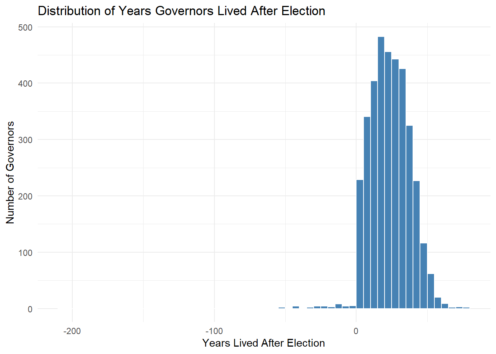

Warning: package 'purrr' was built under R version 4.5.1Warning: package 'gt' was built under R version 4.5.1Warning: package 'purrr' was built under R version 4.5.1Warning: package 'gt' was built under R version 4.5.1This dataset is drawn from an attempt to estimate the causal effect of winning an election on the subsequent lifespan of political candidates. The study includes data from candidates who participated in competitive elections, with the treatment defined as winning versus losing a narrowly decided race. By focusing on close contests, the analysis aims to approximate random assignment, helping to address confounding variables that might otherwise bias estimates. The dataset records each candidate’s age at election, party affiliation, gender, vote margin, and eventual age at death, allowing for regression-based modeling of the relationship between electoral outcomes and longevity.
Commentary: http://www.stat.columbia.edu/~gelman/research/published/causal_paths_3.pdf Response: https://erikgahner.dk/2020/a-response-to-andrew-gelman/
Imagine you work for a life insurer, and want to forecast how long a newly elected Senator might live based on their age, party, and other variables.
Imagine you are a researcher. You want to know if winning candidates live longer.
For this assignment, we will use the governors dataset, which contains information on U.S. gubernatorial candidates and their election outcomes. This dataset comes from published research and is available in the primer.data package.
# A tibble: 3,587 × 13
state year first_name last_name party sex died status win_margin
<chr> <int> <chr> <chr> <chr> <chr> <date> <chr> <dbl>
1 Alabama 1851 Henry Collier Democr… Male 1855-08-28 Chall… 73.4
2 Alabama 1853 John Winston Democr… Male 1871-12-21 Chall… 46.1
3 Alabama 1855 John Winston Democr… Male 1871-12-21 Chall… 15.6
4 Alabama 1857 Andrew Moore Democr… Male 1873-04-05 Chall… 100
5 Alabama 1859 Andrew Moore Democr… Male 1873-04-05 Chall… 45.6
6 Alabama 1861 John Shorter Democr… Male 1872-05-29 Chall… 15.2
7 Alabama 1863 John Shorter Democr… Male 1872-05-29 Chall… -49.0
8 Alabama 1868 William Smith Republ… Male 1899-01-01 Chall… 100
9 Alabama 1870 Robert Lindsay Democr… Male 1902-02-13 Chall… 0.936
10 Alabama 1870 William Smith Republ… Male 1899-01-01 Chall… -0.936
# ℹ 3,577 more rows
# ℹ 4 more variables: region <chr>, election_age <dbl>, death_age <dbl>,
# lived_after <dbl>Rows: 3,587
Columns: 13
$ state <chr> "Alabama", "Alabama", "Alabama", "Alabama", "Alabama", "A…
$ year <int> 1851, 1853, 1855, 1857, 1859, 1861, 1863, 1868, 1870, 187…
$ first_name <chr> "Henry", "John", "John", "Andrew", "Andrew", "John", "Joh…
$ last_name <chr> "Collier", "Winston", "Winston", "Moore", "Moore", "Short…
$ party <chr> "Democrat", "Democrat", "Democrat", "Democrat", "Democrat…
$ sex <chr> "Male", "Male", "Male", "Male", "Male", "Male", "Male", "…
$ died <date> 1855-08-28, 1871-12-21, 1871-12-21, 1873-04-05, 1873-04-…
$ status <chr> "Challenger", "Challenger", "Challenger", "Challenger", "…
$ win_margin <dbl> 73.4021143, 46.1124743, 15.5809303, 100.0000000, 45.55431…
$ region <chr> "South", "South", "South", "South", "South", "South", "So…
$ election_age <dbl> 50.79808, 41.16906, 43.16769, 50.66667, 52.66530, 43.5373…
$ death_age <dbl> 54.60917, 59.29363, 59.29363, 66.08077, 66.08077, 54.0999…
$ lived_after <dbl> 3.811088, 18.124572, 16.125941, 15.414100, 13.415469, 10.… state year first_name last_name
Length:3587 Min. :1850 Length:3587 Length:3587
Class :character 1st Qu.:1890 Class :character Class :character
Mode :character Median :1922 Mode :character Mode :character
Mean :1921
3rd Qu.:1952
Max. :2011
party sex died status
Length:3587 Length:3587 Min. :1675-10-26 Length:3587
Class :character Class :character 1st Qu.:1912-01-04 Class :character
Mode :character Mode :character Median :1945-06-23 Mode :character
Mean :1945-06-14
3rd Qu.:1978-09-08
Max. :2019-08-18
win_margin region election_age death_age
Min. :-87.221 Length:3587 Min. :-158.12 Min. :-115.99
1st Qu.: -7.209 Class :character 1st Qu.: 44.80 1st Qu.: 67.08
Median : 2.791 Mode :character Median : 50.77 Median : 75.70
Mean : 6.405 Mean : 51.19 Mean : 74.76
3rd Qu.: 14.709 3rd Qu.: 57.01 3rd Qu.: 83.72
Max. :100.000 Max. : 274.02 Max. : 101.72
NA's :1 NA's :7 NA's :7
lived_after
Min. :-208.02
1st Qu.: 13.52
Median : 23.32
Mean : 23.57
3rd Qu.: 33.37
Max. : 78.28

What sorts of questions are we trying to answer? Do wining candidates live longer after elections compared to the losing ones?
In order to build the Preceptor Table, we need to know: Is the model causal or predictive? What are units? What are the outcomes? What are the covariates? What are the treatments? Describe the mathematical Structure of the model.
The model is causal. Units are election candidates. Outcome variable is the years lived after. Treatment is wining election or not. Covariates are age, sex and party. The mathematical structure of the model is linear regression.
Describe the Population Table in your own words—what does each row represent in this context? Then, for each of the four key assumptions (validity, stability, representativeness, and unconfoundedness), provide both a definition in your own words and one specific counter-example for each assumption.
Population table is the unit/time combination e.g., Individuals/at the time of election. Validity is the consistency between columns of the preceptor table. It might not hold as other variable like exercise can be included but not in the preceptor table. Stability is the consistency anong all 3 columns of the preceptor table. It might not hold as over the time people might have lived longer based on better healthcare facilities. Representativeness might not hold as the most of the data is from larger states than the smaller ones. So, it’s not representative of whole population. Unconfoundedness is the assumption that the outcome does not dictate the assignment of the treatment. It might not hold as external factors such as wealth might effect the outcome variable and it is not included in the data.
The outcome variable in this study is death_age, which is the age each political candidate died. What kind of regression model should you use to predict or explain death_age? Explain your choice based on what kind of variable death_age is?
Call:
lm(formula = death_age ~ election_age + year, data = governors)
Coefficients:
(Intercept) election_age year
-103.48548 0.29495 0.08493 There is not much correlation between wining the election and years lived after that. We used linear regression because death_age is a continuous dependent variable that we want to predict or explain using other independent variables (like election age and year).